Topic: CL235

| CLICK Example for AB CompactLogix |
Topic: CL235
|
CLICK PLCs now have two ways to connect to AB CompactLogix PLCs as EtherNet/IP Adapter. Select the link below depending on your application and Studio5000 Software version:
This table can help you determine the best option:
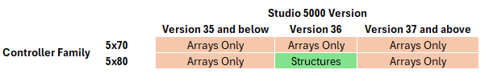
In this example, we are utilizing the EDS file that can be exported from the CLICK EtherNet/IP Adapter setup.
1We will map multiple data blocks of different data types into the CLICK EtherNet/IP Adapter setup.
|
Note: If the Imported data types have Nicknames the imported tags with use the Nickname as the tag name, otherwise they will import as the fixed address. |
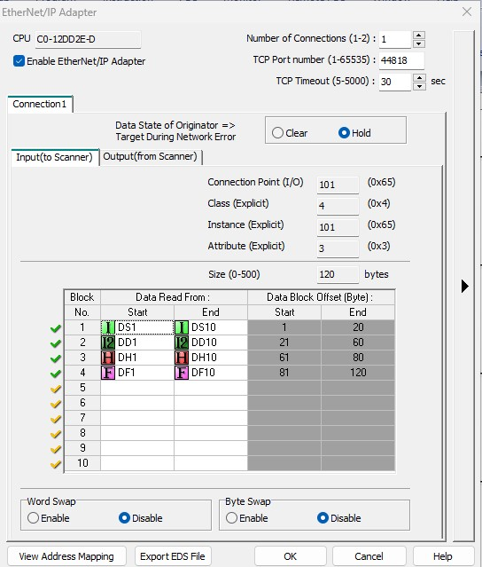
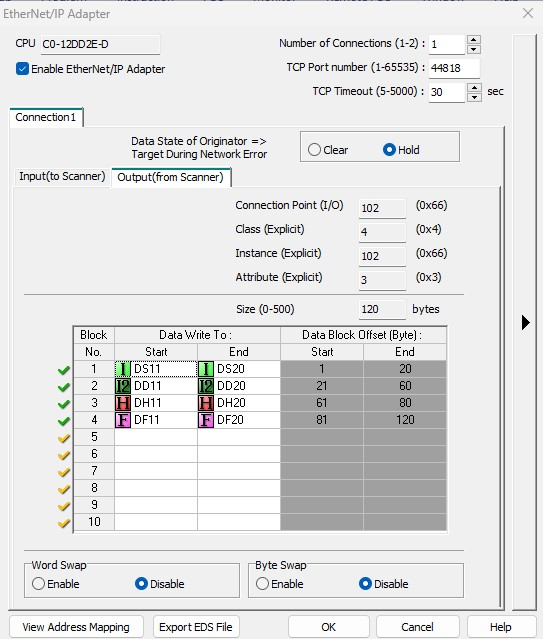
2 Click the Export EDS File button after configuring the CLICK EtherNet/IP Adapter setup and save the file to a location it can be accessed by the Studio5000 software.
3 Use the EDS import tool in the Studio5000 software to add the CLICK EDS file. Consult the help file documentation in Studio5000 for more information on how this is accomplished.
4 In the Controller Organizer on the left-hand side, right click on the Ethernet option and choose New Module.

5 In the Select Module Type window shown below, start typing the name CLICK or the name of the EDS file to search for existing files. By default, the name of the EDS file will be the part number of the CLICK PLC you are using, and the Description will start with “CLICK” so you can search for either. Select this module as shown below and click Create.
|
Note: If you change the name of the file from the part number, you will get a "key" compatibility error when trying to connect to the CLICK PLC. to remove this error, leave the EDS filename as is when exporting or disable the key compatibility checking for the device. |
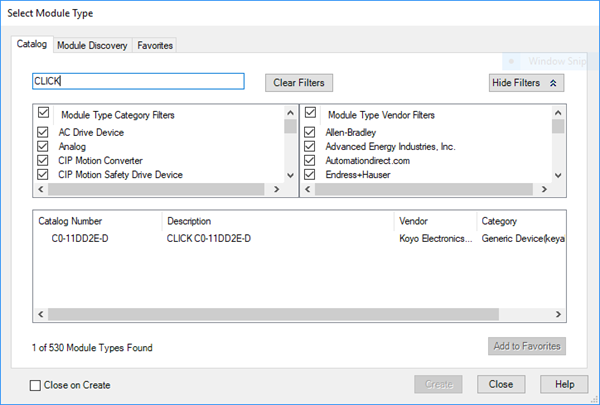
6 In the New Module window, type in a unique name and the IP address of the CLICK PLC. Click OK to create this device and download the project to the PLC.
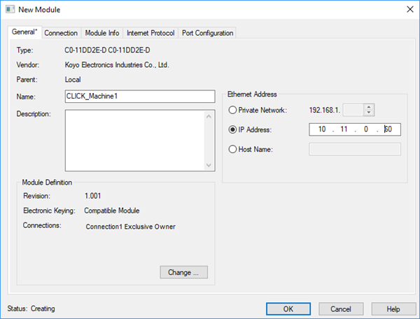
Two arrays, one Input Array and one Output Array are created from the New Module configuration. In this example:
|
Note: If the Imported data types have Nicknames the imported tags with use the Nickname as the tag name, otherwise they will import as the fixed address. See example below: myDS1 is a nickname and DS2 is the fixed address since no nickname was assigned. |
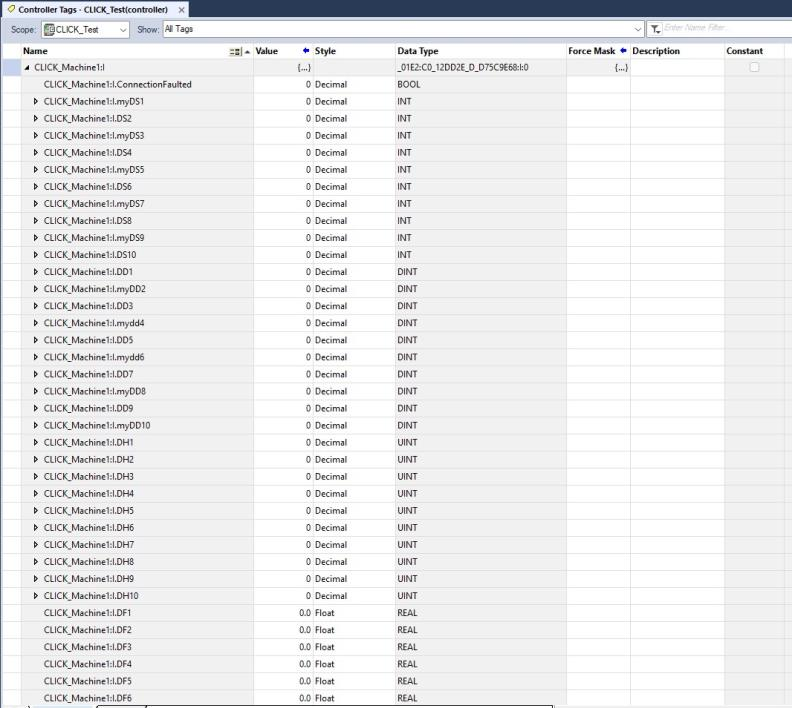
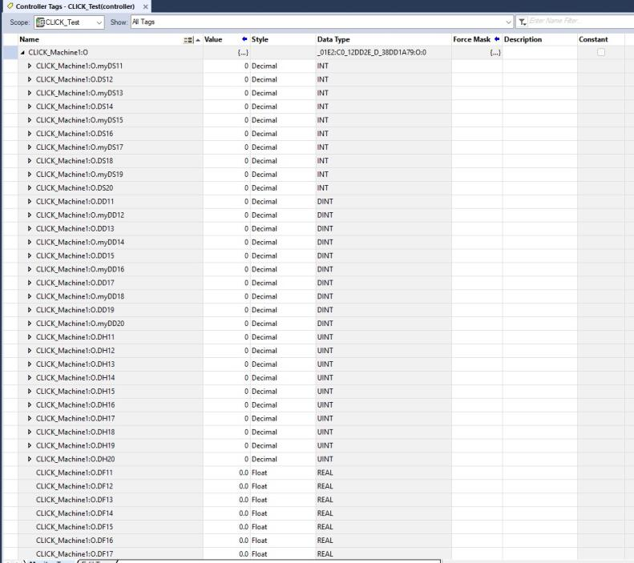
You should now be able to read data from the Allen-Bradley 5x80 Controller in the CLICK and write data from the CLICK to the Allen-Bradley 5x80 Controller.
In all the I/O Messaging examples below, we are utilizing the EDS file that can be exported from the CLICK EtherNet/IP Adapter setup, but this is not required. In the Studio5000 software, you can create a Generic Device and use the parameters outlined in the EtherNet/IP Overview topic of the CLICK help file. Using this information in conjunction with the examples below should provide the required information for successful connection.
In this example, we will create only 1 user block of memory for Inputs and 1 user block of memory for Outputs in the CLICK EtherNet/IP Adapter setup to read from and write to in the AB CompactLogix PLC.
CLICK Setup:


1 Click the Export EDS File button after configuring the CLICK EtherNet/IP Adapter setup and save the file to a location it can be accessed by the Studio5000 software.
2 Use the EDS import tool in the Studio5000 software to add the CLICK EDS file. Consult the help file documentation in Studio5000 for more information on how this is accomplished.
3 In the Controller Organizer on the left-hand side, right click on the Ethernet option and choose New Module.
4 In the Select Module Type window shown below, start typing the name CLICK or the name of the EDS file to search for existing files. By default, the name of the EDS file will be the part number of the CLICK PLC you are using, and the Description will start with “CLICK” so you can search for either. Select this module as shown below and click Create.
|
Note: If you change the name of the file from the part number, you will get a "key" compatibility error when trying to connect to the CLICK PLC. to remove this error, leave the EDS filename as is when exporting or disable the key compatibility checking for the device. |
5 In the New Module window, type in a unique name and the IP address of the CLICK PLC.
6 Click the Change… button at the bottom of this window.
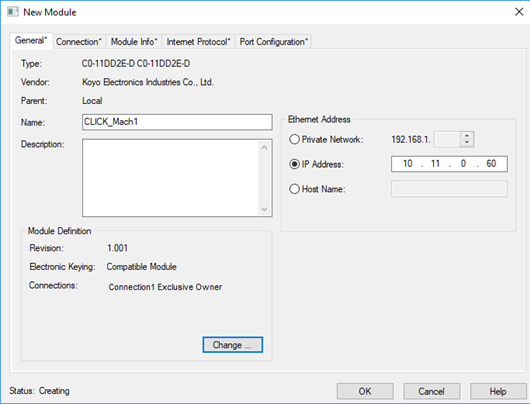
7 Click on the data type option on the right-hand side and pick the data type that matches the CLICK PLC Adapter configuration. In this example, we will choose INT since we configured the CLICK PLC with the DS data type (Integer 16).
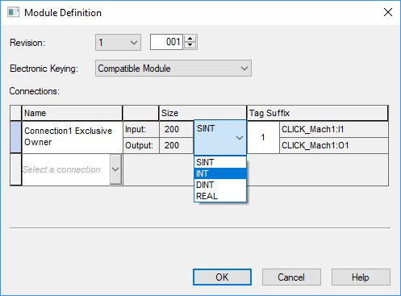
Notice that the Size changes based upon the data type selected. The Size value indicates the number of elements not bytes (unless you have configured a byte data type).
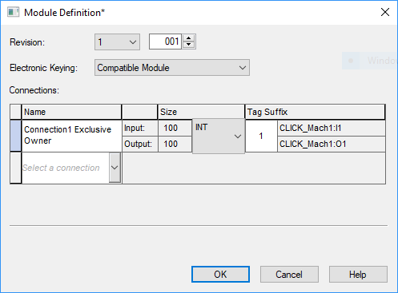
Click OK and then Yes in the subsequent warning dialog box.
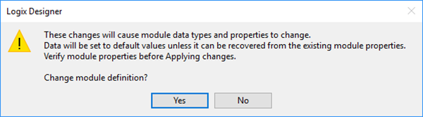
8 In the New Module dialog box, click OK and then Close in the Select Module Type dialog box. Send the project to the PLC.
9 Open the Controller Tags window and expand the arrays that were created by the New Module dialog setup. You should now see the values in the PLC for the input tags and should be able to write values from the CompactLogix to the Output tags of the CLICK PLC.
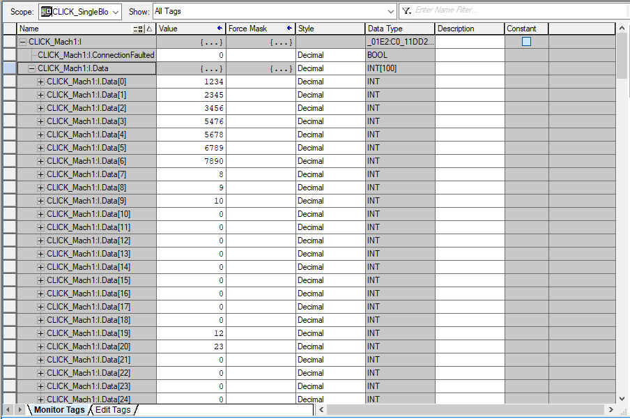
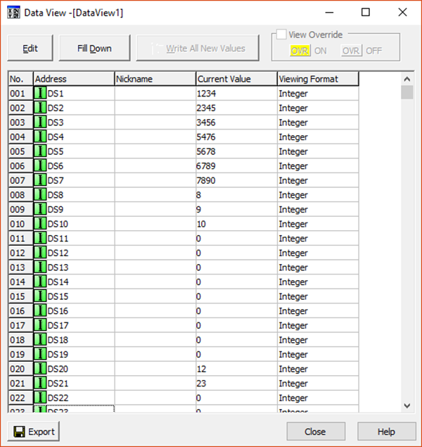
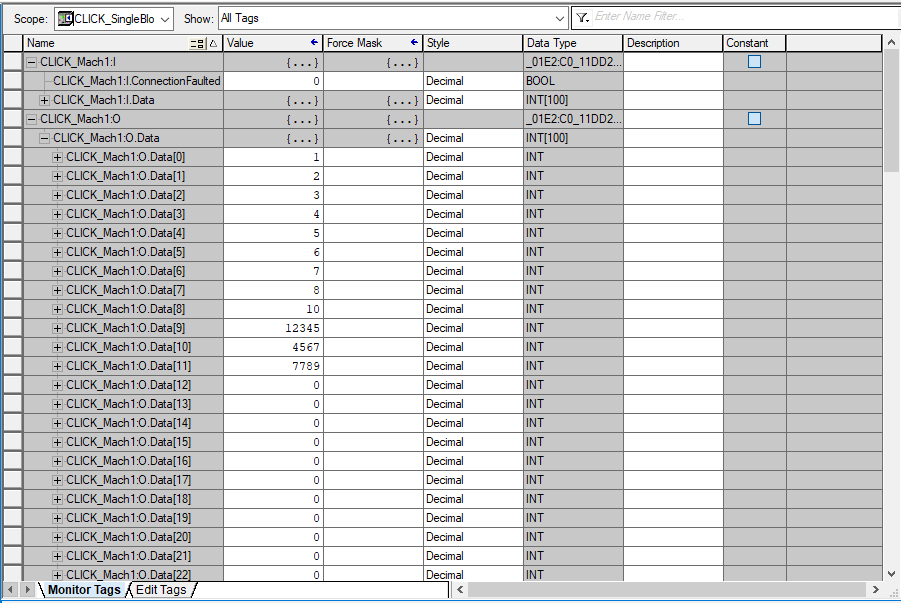
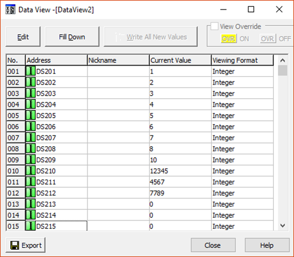
In this example, we will map multiple data blocks of different data types into the CLICK EtherNet/IP Adapter setup. To simplify the code in the CompactLogix, we will create two User-Defined Data types that match the formats of the CLICK EtherNet/IP Adapter setup to read from and write to in the AB CompactLogix PLC
CLICK Setup:
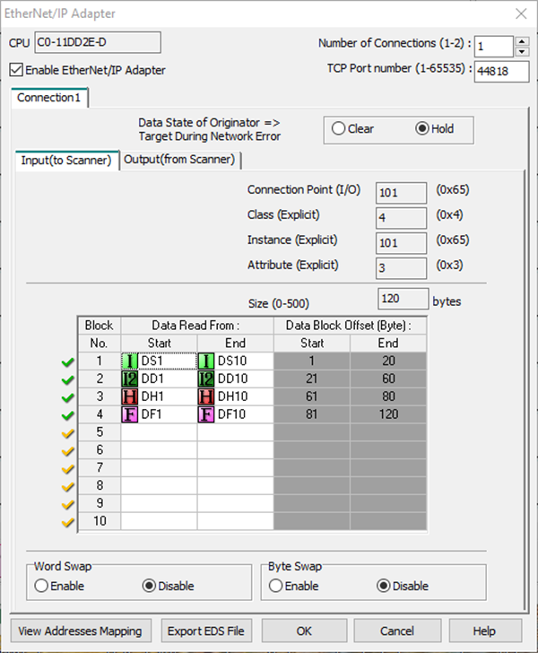
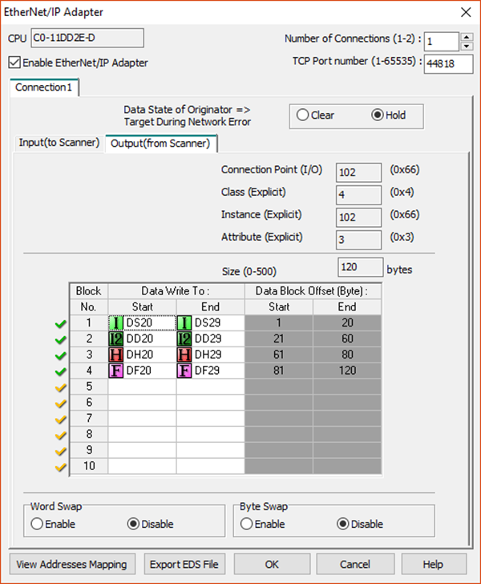
1 Create two User-Defined data types in the CompactLogix that match the CLICK setup shown above.
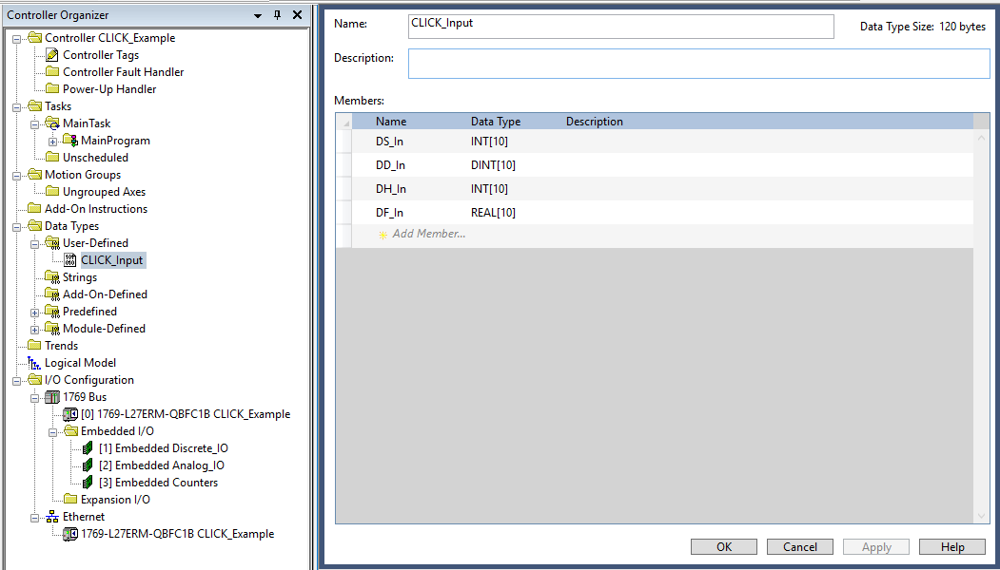
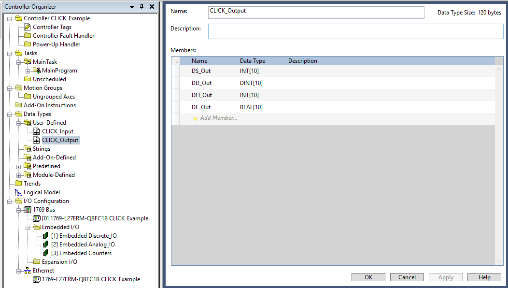
2 In the CLICK software, click the Export EDS File button after configuring the CLICK EtherNet/IP Adapter setup and save the file to a location it can be accessed by the Studio5000 software.
3 Use the EDS import tool in the Studio5000 software to add the CLICK EDS file. Consult the help file documentation in Studio5000 for more information on how this is accomplished.
4 In the Controller Organizer on the left-hand side, right click on the Ethernet option and choose New Module.
5 In the Select Module Type window shown below, start typing the name CLICK or the name of the EDS file to search for existing files. By default, the name of the EDS file will be the part number of the CLICK PLC you are using, and the Description will start with “CLICK” so you can search for either. Select this module as shown below and click Create.
If you change the name of the file from the part number, you will get a “key” compatibility error when trying to connect to the CLICK PLC. To remove this error, leave the EDS filename as is when exporting or disable the key compatibility checking for the device.
6 In the New Module window, type in a unique name and the IP address of the CLICK PLC. Click OK to create this device and download the project to the PLC.
Two arrays, one Input Array and one Output Array are created from the New Module configuration. In this example:
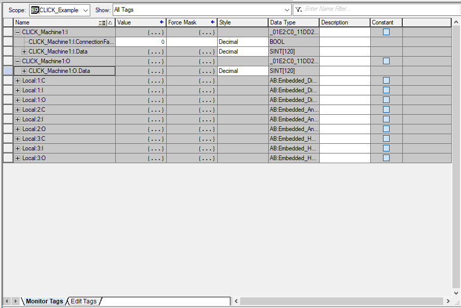
7 Use the CLICK_Input and CLICK_Output User-Defined data types created earlier to create structure tags CLICK_InData and CLICK_OutData. In the two Copy instructions below, copy the Input Array into a CLICK_InData and copy CLICK_OutData to the Output Array going to the CLICK PLC.
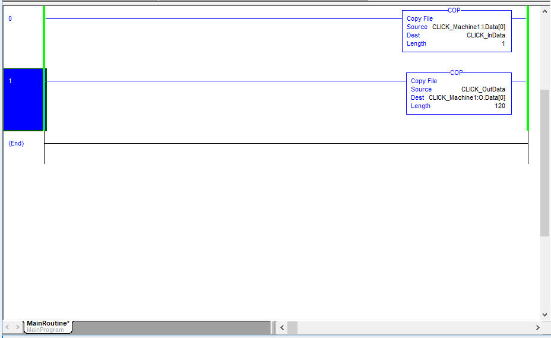
You should now see the data from the PLC addresses of the CLICK EtherNet/IP Adapter Input setup in the CLICK_InData structure tag.
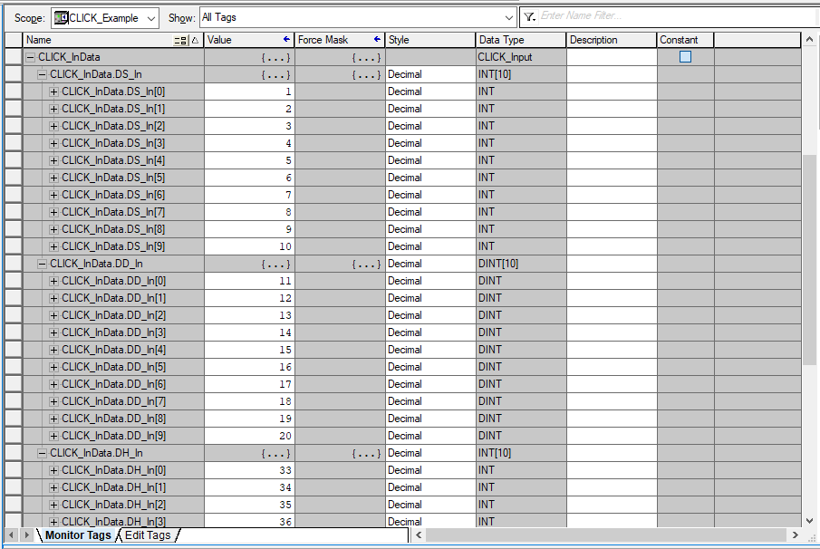
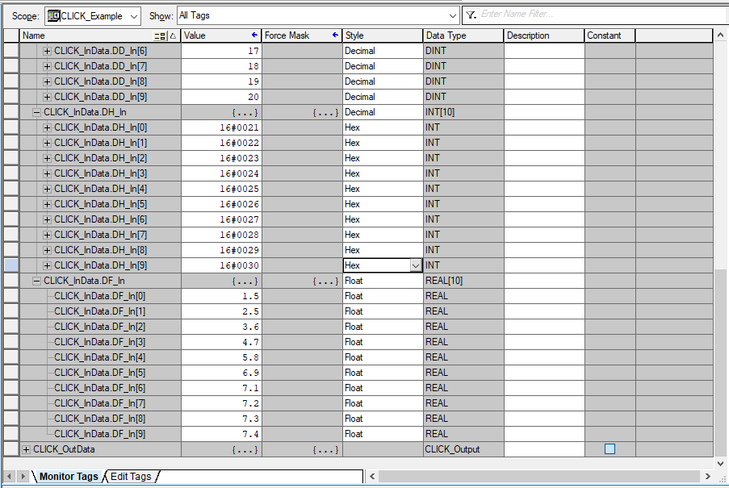
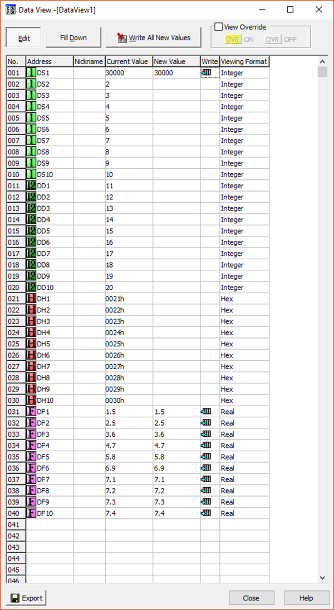
You should now be able to write data from the CLICK_OutData structure to the PLC addresses in the CLICK EtherNet/IP Adapter Output tab.
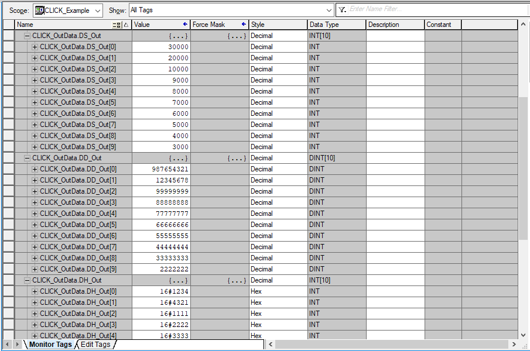
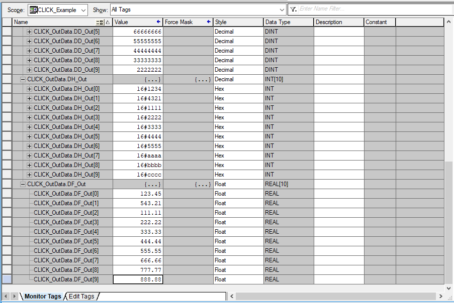
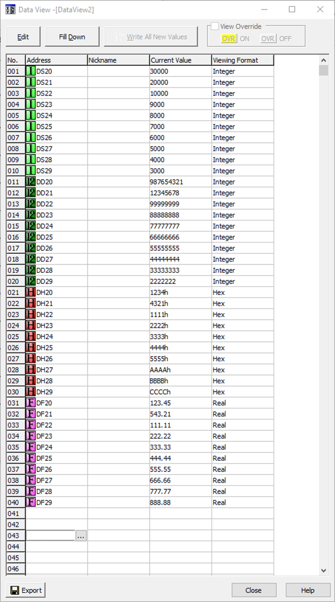
For communicating to the CLICK PLC with EtherNet/IP Explicit Messaging no EDS file import is required, nor do you need to add a module to the I/O Configuration in the Controller Organizer in Studio5000. Once the CLICK EtherNet/IP Adapter setup is completed and Data Blocks are created, you simple use MSG instructions in the CompactLogix configured for the CIP Generic Message Type.
Refer back to the I/O Messaging Single Data Block and I/O Messaging Multiple Data Block examples above.
A separate MSG instruction is needed for each Data Block and for Input Data and Output Data.
An example of reading and writing using Connection 1 is explained below:
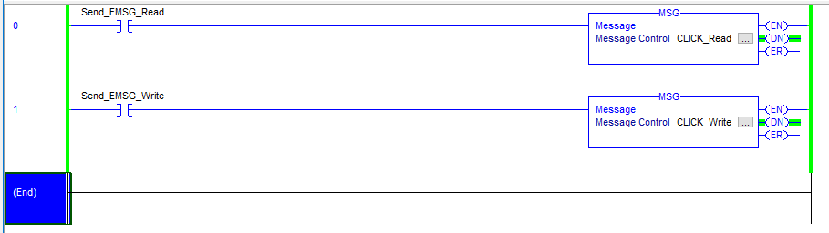
Read Instruction
For reading the Connection 1 Input data, fill in the parameters as shown below. The destination array can be created within the instruction by clicking the New Tag button. The array size should be large enough to receive all blocks in the connection. Note also that it should match the data type of the CLICK PLC. In this case, the CLICK EtherNet/IP Adapter setup has been configured for the DS data type, so an INT array should be used.
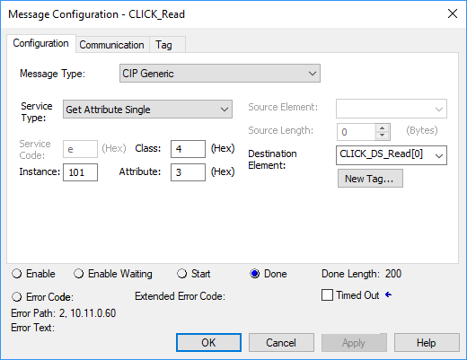
Under the Communications tab configure the Path. The Path will differ slightly for different CompactLogix and ControLogix PLCs. Consult the documentation for details on the exact PLC you are using. The target IP address, in all cases, is the IP address of the CLICK PLC.
Use this same Path setup for all the MSG instructions you are using in this project.
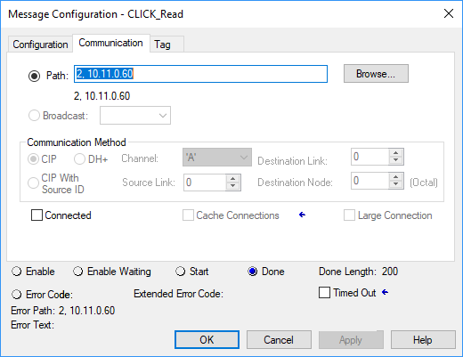
Configure the Write MSG instruction for Connection 1 Output data as shown below. Again, the destination array can be created within the instruction by selecting the New Tag button. We are using DS data type in the CLICK setup here as well, so an INT array should be used to send data in this instruction.
Set the Path under the Communication tab just as you did with the previous MSG instruction.
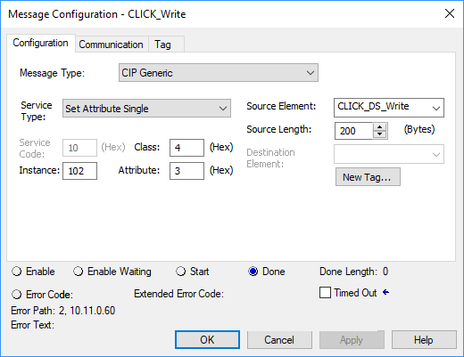
CLICK Example for Productivity Series PLC
CLICK Example for the Do-more PLC
General & Extended Status EtherNet IP Error Codes